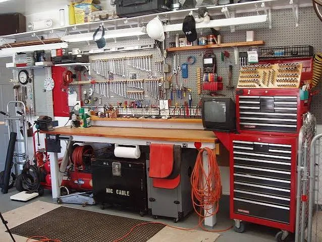
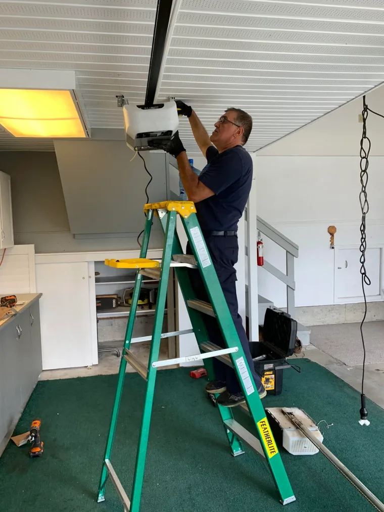

Garage door repair
Doors that stick, grind, hang crooked or stop halfway. We find the actual cause instead of swapping parts until it moves.
Residential repair →316 Garage Door Services is a family-owned garage door repair company in Langley, BC offering repair, broken spring replacement, LiftMaster opener installation and new garage door installation. Serving the Lower Mainland since 2015 with 10+ years of hands-on experience, we diagnose the actual cause instead of swapping parts until the door moves — and we get the job done right the first time.

Doors that stick, grind, hang crooked or stop halfway. We find the actual cause instead of swapping parts until it moves.
Residential repair →Torsion and extension spring replacement, balanced properly so the opener is not carrying weight it was never built to lift. One-year spring warranty.
Spring replacement →LiftMaster and myQ opener installation, including belt-drive units that run quiet and connect to the myQ app on your phone.
Opener services →Replace a tired, dented or outdated door with one that suits the house — and adds real curb appeal when it is time to sell.
Door installation →Worn hardware is what makes a door loud, jerky and unsafe. Replacing it is usually cheaper than living with what it damages.
Hardware repair →Photo eyes, wall consoles, keypads, bottom brackets, struts, pulleys and weather stripping that keeps water and pests out.
Service & maintenance →Garage door repair in Langley and the Lower Mainland. We repair sectional garage doors, replace torsion and extension springs, install LiftMaster and myQ openers, and install new garage doors for Langley, Surrey, White Rock, Burnaby, Coquitlam, Port Coquitlam, Port Moody, Maple Ridge, Vancouver, North Vancouver, West Vancouver, Richmond, Abbotsford, Chilliwack and Delta homeowners. Explore our garage door repair & installation services, residential garage door repair, commercial garage door repair, residential door installation and service areas. Every garage door service call starts with a free consultation and a price you approve before any work begins — call 604-388-9868.

316 Garage Door Services is a family-owned company specializing in troubleshooting, repairing, installing and servicing residential and commercial garage doors. Customer satisfaction and quality work are at the center of the business, with a focus on getting the job right the first time.
↓ Click me
Many Langley homeowners are upgrading to a LiftMaster belt-drive motor with myQ connectivity, which lets you open or close the garage door from an internet-connected phone app, check whether the door is open or closed when you are not home, and receive alerts. Belt-drive openers are noticeably quieter than chain drives — important on a street close to neighbours — and 316 installs them for you.
From a single broken spring to a complete garage door upgrade, every job is about restoring safety, smooth operation and curb appeal. See the full gallery →
 Spring & cable service
Spring & cable service LiftMaster opener
LiftMaster opener Track & roller adjustment
Track & roller adjustment Opener inspection
Opener inspection Opener service
Opener service Opener installation
Opener installation Installed door
Installed doorDescribe the symptom on the phone and you will usually get an answer before anyone drives out.
Usually a snapped spring, a broken cable or a failed opener gear. Forcing it turns one repair into three.
Call 604-388-9868 →Rollers, hinges and bearings wearing through. Cheap to replace now, expensive once it damages the sections.
Call 604-388-9868 →Photo eyes knocked out of alignment, a dirty lens, or opener force settings that drifted out of spec.
Call 604-388-9868 →A gap at the slab lets in rain and rodents. A new bottom seal plus a door adjustment closes it for good.
Call 604-388-9868 →A straightforward process from the first phone call to a properly operating door.
Tell Ivan what the door is doing. Most problems are narrowed down on the phone.
The door, opener, springs and hardware get checked as one system, not one part.
You hear what is wrong, what it costs, and what can wait — before anything is touched.
Repaired, balanced, tested and left running the way it did when it was new.
A garage door is the heaviest moving thing on your house. Who works on it matters.
A garage door is a system, and the part that broke is rarely the only thing wearing out. That is why we inspect the whole door before we quote, and tell you honestly what needs doing now and what can wait. It is the difference between fixing a door and babysitting it.
See what homeowners across the Lower Mainland say about the service, communication and workmanship.
Fixed our broken spring fast and caught a second problem with the arm operator bracket before it cost us more. Efficient and professional.
Our spring broke on a Sunday afternoon. Ivan came immediately and replaced both springs within the hour. Wouldn’t hesitate to use him again.
He installed one opener for us last year and another this month. Professional, kept his promises, real attention to detail.
Replaced my old opener with a quieter unit that links to my phone, so I know if the door is open even from overseas. Fair price.
On a Saturday he said he’d be there in a couple of hours. Excellent communication, arrived on time, and the door was as good as new.
Easy to talk to and booked us the same day. He also showed us how to maintain the garage. Fair price, definitely recommend.
A gap on one side was letting rodents in. Within hours the seal was done and the door adjusted. Peace of mind again.
Ivan knows his stuff and goes the extra mile. He has gone above and beyond what I expected every single time.
Professional and extremely knowledgeable about all things garages. Quick, concise work. Highly recommend.
He was there the same day and got it all fixed up quickly. Professional, quality work.
Prompt service and very professional. Would definitely call back next time.
Called him in the morning and he came as soon as possible. Very good job, and fast. Happy with the service.
Straight answers about cost, timing and coverage in the Lower Mainland. Still unsure? Call 604-388-9868.
Repair pricing depends on door size, parts and how long the fault has been left. Most garage door repairs run about $25 to $50 for the work itself, depending on the project, with parts extra. Torsion or extension spring replacement and opener installation cost more because they use higher-rated parts and more labour. Call 604-388-9868 and describe the symptom — you get a free consultation and a price before work starts.
We offer same-day and weekend appointments in Langley and across the Lower Mainland when the schedule allows. Residential service hours are 9 AM to 6 PM, and commercial service is available 24/7. Most Langley jobs are booked within a few hours of your call.
Yes. We replace both torsion and extension springs and balance the door so the opener is not lifting weight it was never designed for. Spring work carries a one-year warranty, and replacing springs without balancing the door is a common cause of premature opener failure.
Yes. We install and repair LiftMaster openers, including quiet belt-drive motors that link to the myQ app so you can open, close and check your garage door status from your phone.
Usually photo eyes out of alignment, a dirty or blocked safety sensor lens, an obstruction in the door path, or opener force settings that have drifted out of specification. We realign and clean the sensors and reset the opener limits and force settings.
Yes. We install new residential garage doors for renovations, new builds and replacements, matched to your opening and the style of your house, with hardware and finish options to suit your budget.
We are based in Langley and serve Langley, Surrey, White Rock, Burnaby, Coquitlam, Port Coquitlam, Port Moody, Maple Ridge, Vancouver, North Vancouver, West Vancouver, Richmond, Abbotsford, Chilliwack, Delta and surrounding communities. See our service areas, or call to confirm availability in your area.
Yes. Consultations are free, there are no travel fees, and you approve the price before any work begins — no surprise call-out fees and no obligation to proceed.
Plus surrounding Lower Mainland communities — Aldergrove, Willoughby, Walnut Grove, Fort Langley, Clayburn, Mission, New Westminster and Pitt Meadows. See the full service areas or call 604-388-9868 to confirm garage door service availability in your area.
Book a free consultation or call directly. Residential service runs Monday to Saturday, 9 AM to 6 PM. Commercial service is available 24/7. You approve the price before any work begins, and there are no travel fees.
We are based in Langley, BC and cover Metro Vancouver and the Fraser Valley. Call or email and we will confirm a time, then give you a free consultation and a price before any work begins.